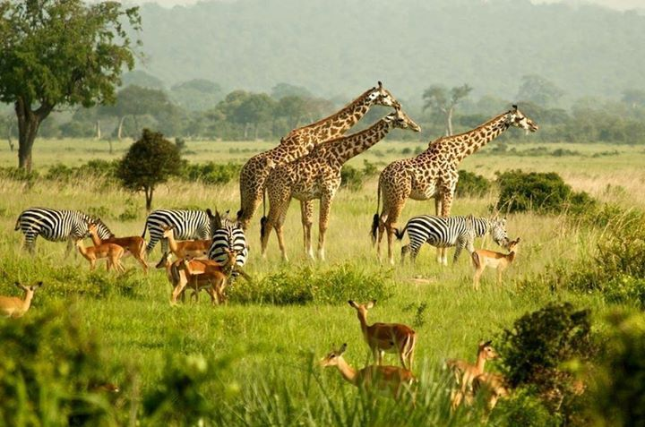

Our Legacy
Founded in passion, driven by purpose
Beyond the Ordinary Safari
Legacy Safaris Ltd was born from a deep love for Africa’s wilderness. Since 2005, we have curated private, small‑group adventures that respect nature and empower local people.
Our team of Maasai and Kikuyu guides, conservationists, and travel designers ensure every journey leaves a positive footprint. We are proud members of Ecotourism Kenya and Fair Trade Tourism.

Our Mission
To deliver transformative, eco‑conscious safaris that protect Africa’s wildlife heritage while uplifting local communities through fair tourism practices.
Our Vision
A future where every safari traveler becomes a guardian of the wild, and Africa’s ecosystems thrive for generations.
Years of Excellence
Happy Travelers
African Countries
Community Projects
Our Core Values
Sustainability
Carbon‑neutral operations & wildlife conservation
Community First
Empowering local guides & women‑led enterprises
Safety & Ethics
Highest safety standards & animal welfare protocols
Tailormade Luxury
Private journeys crafted to your pace & style
Wilderness Guardians
Our expert guides & conservation leaders